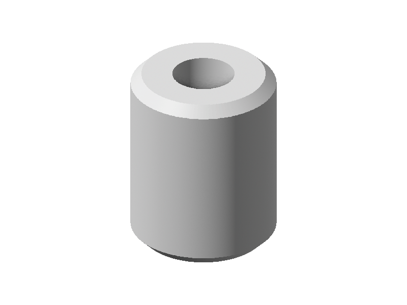
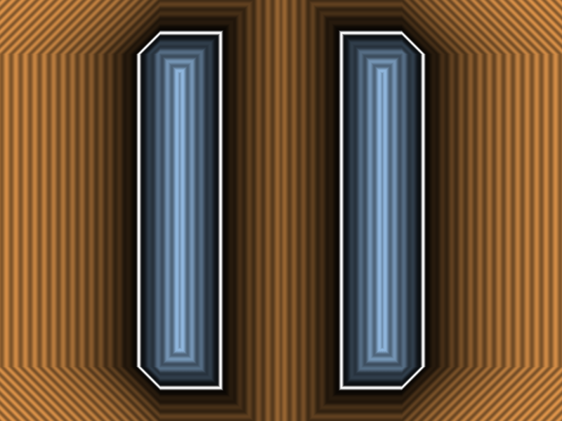

spacer
Drafted with AI, not yet reviewed
by keycap
Spacer: a round standoff for an M3 screw, its outer edges chamfered.
Written in fidget’s own dialect, so fidget’s viewer runs it as it is,
and its CLI with --type rhai.



Files
Source
// SPDX-License-Identifier: 0BSD // // Spacer: a round standoff for an M3 screw, its outer edges chamfered. // Written in fidget's own dialect, so fidget's viewer runs it as it is, // and its CLI with `--type rhai`. // --- Parameters --- const D = 8.0; // outer diameter const H = 10.0; // height const HOLE = 3.4; // M3 clearance const CHAMFER = 0.6; // --- Spacer --- let r = (x.square() + y.square()).sqrt(); let tube = difference( circle(#{center: [0, 0], radius: D / 2}), circle(#{center: [0, 0], radius: HOLE / 2}), ); let body = extrude_z(tube, 0, H); // A cone at each end cuts the edge off at 45 degrees. let bottom = r - (D / 2 - CHAMFER) - z; let top = r - (D / 2 - CHAMFER) - (H - z); draw(intersection([body, bottom, top]));